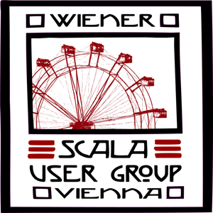

 We are a bunch of software developers interested in discovering Scala, learning about new techniques and frameworks and meeting other Scala developers in the Vienna area. Our aim is to meet regularly in 4 week cycles and share knowledge and experiences about the Scala programming language and its ecosystem.
We post questions, problems, ideas, ... you name it on our Google group: http://groups.google.com/group/scala-vienna
We manage our meetings at meetup.com: http://meetup.scala-vienna.org
We post our code to: https://github.com/scala-vienna
We are on Twitter as @ScalaVienna, we use hashtags #scalavienna or #vsug.
Developers from all skill levels eager to learn more about this great language are welcome! Come on and join us!
Some of us will be at